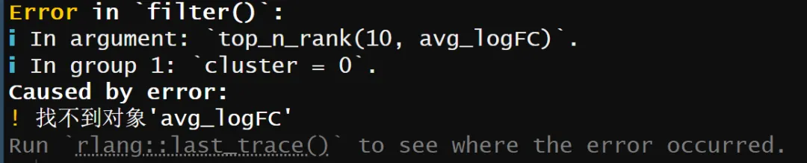

不是代码有bug，而是软件在更新
原文：https://mp.weixin.qq.com/s?__biz=MzAwMzIzOTk5OQ==&mid=2247535577&idx=1&sn=d38e5da6971ad77d0b5cb83a7026f2c6&chksm=9b3c3289ac4bbb9f5b334cbd082850b69a54b9c1f4b19dd5130c306ce6a1382d087c8000b8f7#rd 合集：答读者问
有些流程，跑着跑着就不一定能用了，例如做单细胞分析时常有这么两行用来计算所有cluster的top marker gene。
-
-
-
- *
-
-
scRNA.markers <- FindAllMarkers(scRNA, only.pos = TRUE, min.pct = 0.25, logfc.threshold = 0.25)
top10 <- scRNA.markers %>% group_by(cluster) %>% top_n(n = 10, wt = avg_logFC)
遇到了如下报错：

其实原因也很简单：Seurat更新了，FindAllMarkers()函数输出的数据框中保存"基因差异倍数对数值"的列名由avg_logFC改为了avg_log2FC。做对应修改即可：- *
top10 <- scRNA.markers %>% group_by(cluster) %>% top_n(n = 10, wt = avg_log2FC)
所以大家刷各个公众号时也别觉得其它博主老写bug，很多无法顺利运行的教程，都是由于版本冲突造成的，这也是为什么我们的教程一般都会附上软件、环境信息。Seurat各版本的使用流程我们也单独做过整理，生信基地也一直在维护、更新教程：scRNA-Seq学习手册Seurat V4修订版scRNA-Seq学习手册Seurat V5更新版快速上手Seurat V5
大家运行教程也不能太机械，我们一直强调大家需要理解数据格式和函数功能。虽然总是调侃自己是”调包侠“，但生信远不止Ctrl C+V。理解永远比记住更重要。如果你希望形成一个系统、良好的单细胞/空转分析习惯，不妨看看课程：限时回归！两个月时间，手把手教会你scRNA-seq数据分析！：

如何联系我们

 留一个领取资料、开箱即用的单细胞分析镜像的微信号[Biomamba_zhushou]，方便各位随时交流。同时我们也构建了交流群矩阵，欢迎大家入群讨论。
大家可以阅读完这几篇之后添加给生信入门初学者的小贴士
没有检索，就没有发言权
留一个领取资料、开箱即用的单细胞分析镜像的微信号[Biomamba_zhushou]，方便各位随时交流。同时我们也构建了交流群矩阵，欢迎大家入群讨论。
大家可以阅读完这几篇之后添加给生信入门初学者的小贴士
没有检索，就没有发言权
已有生信基地联系方式的同学无需重复添加

 您点的每个赞和在看，我都认真当成了喜欢
您点的每个赞和在看，我都认真当成了喜欢